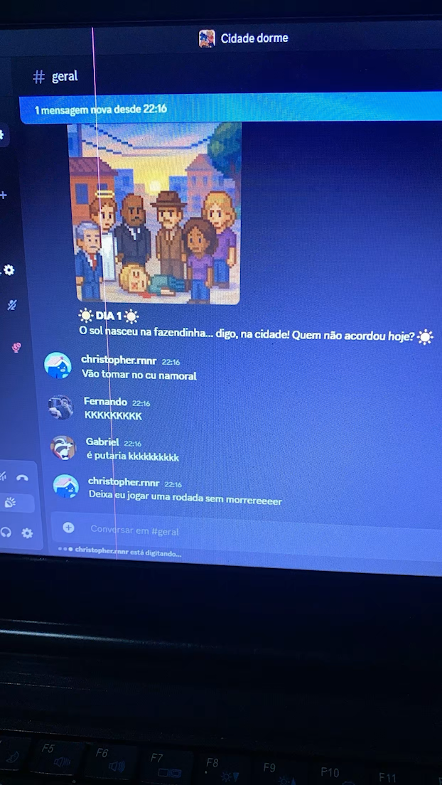
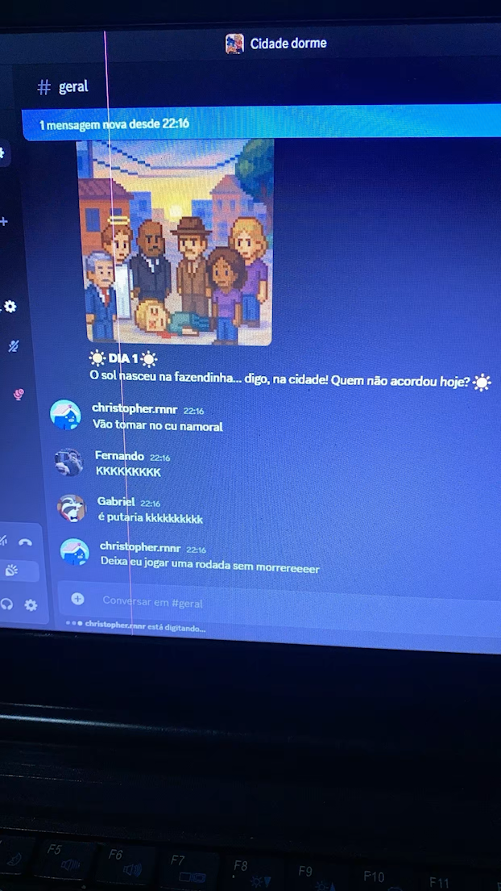

Na quietude da noite, pactos são selados e facas são afiadas. Quando o sol nascer, a cidade acordará para um pesadelo: um traidor está entre eles. Este bot transforma seu Discord em um palco de intriga e paranoia. Com gerenciamento automático de voz, sons imersivos e papéis que mudam o jogo, a única coisa com que você precisa se preocupar é em quem confiar. Reúna seus amigos. A caçada começou.


 
